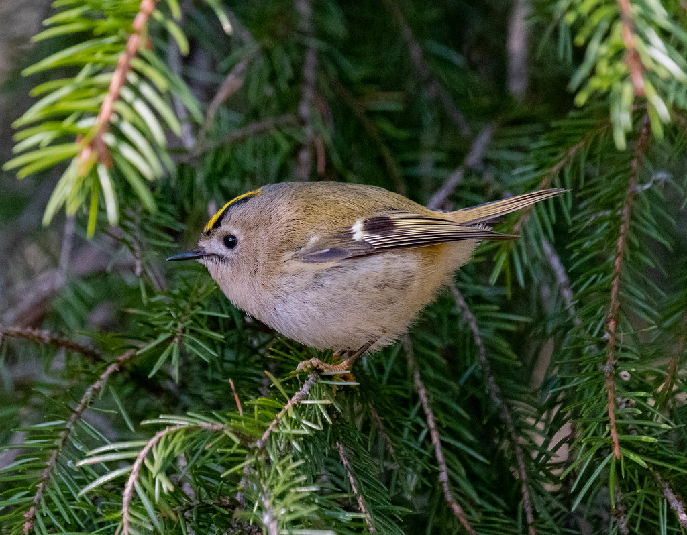
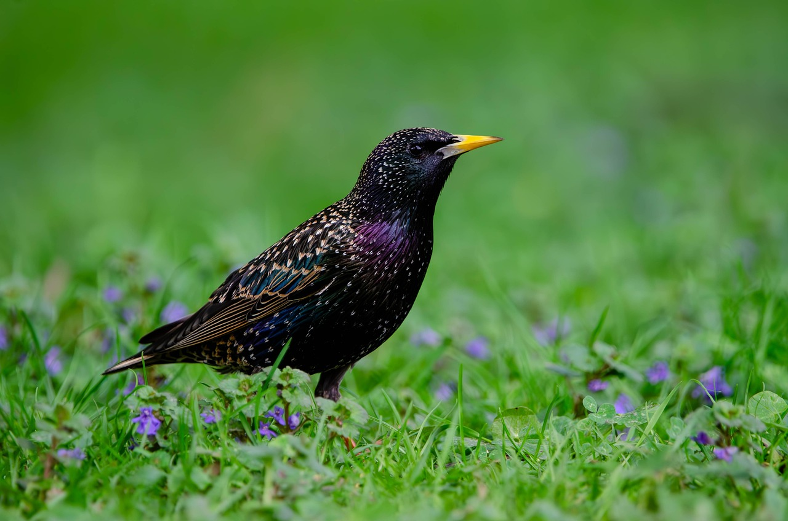
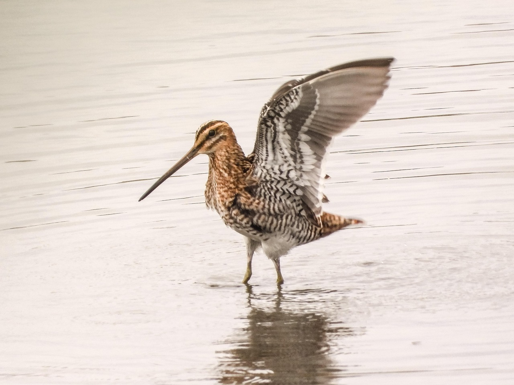
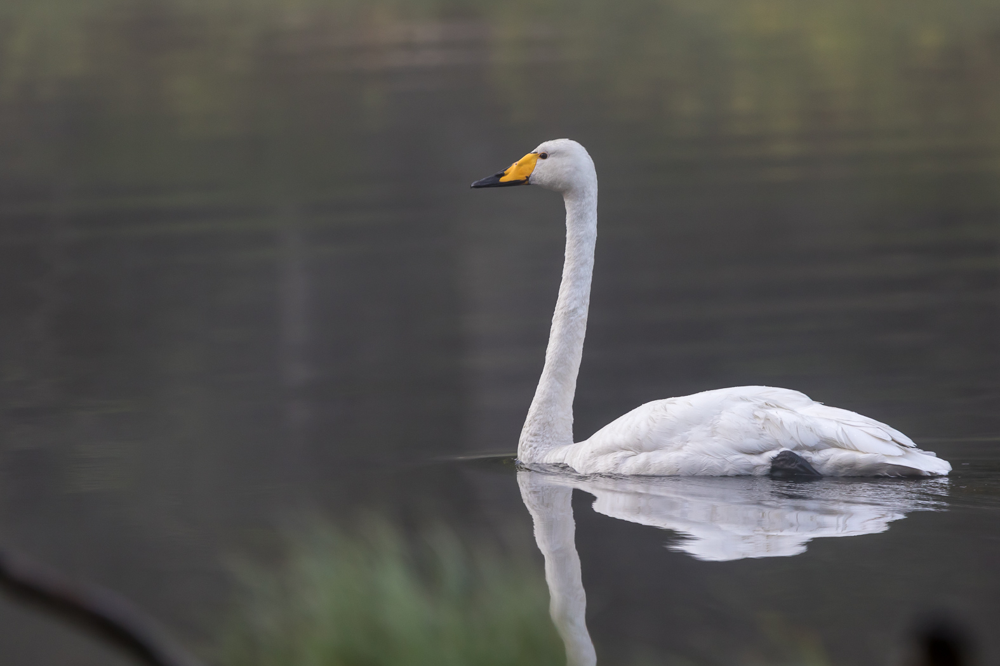
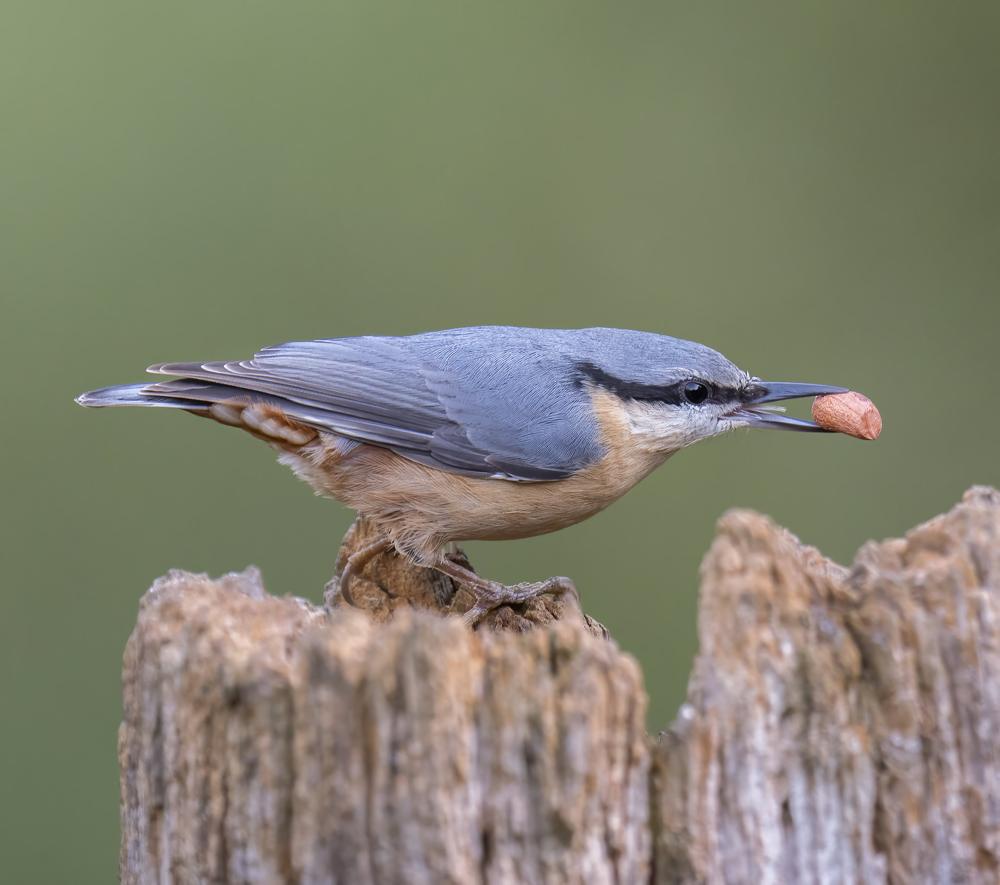
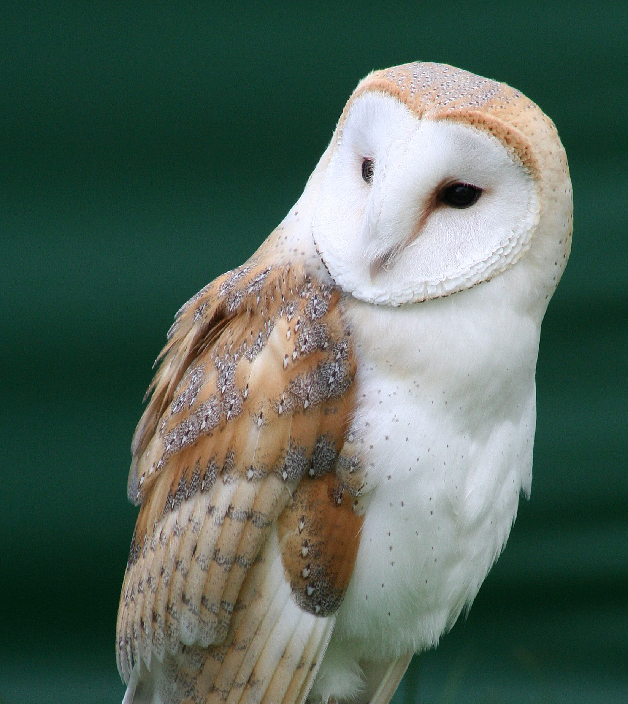
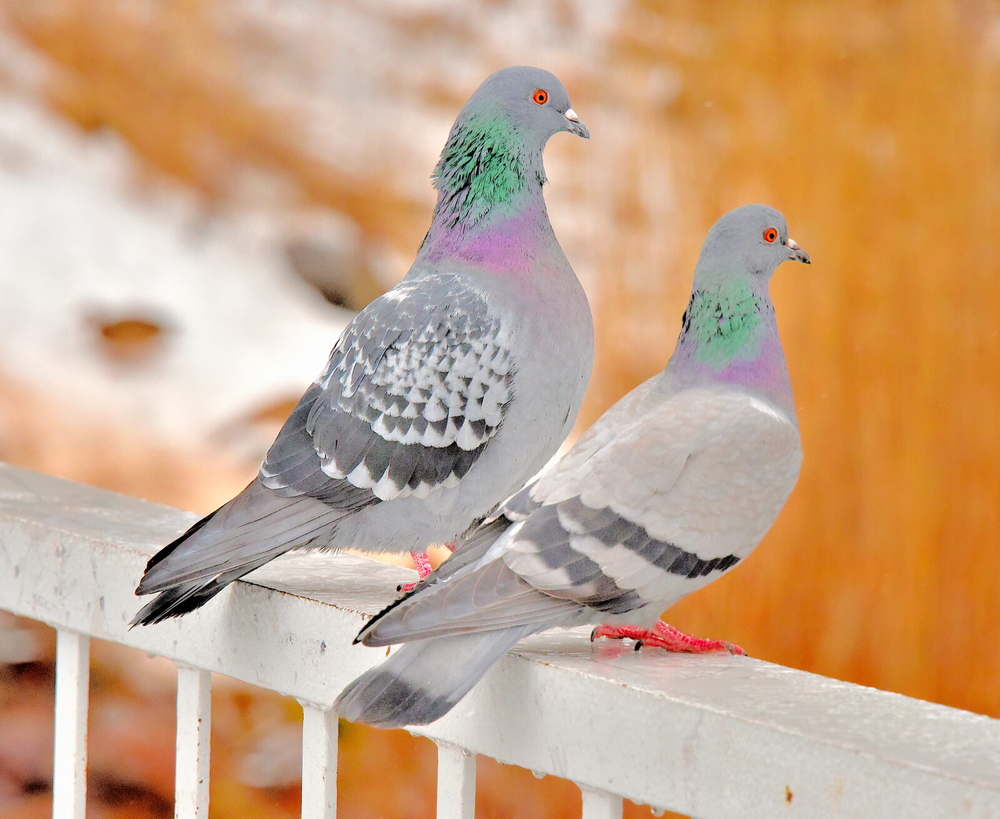
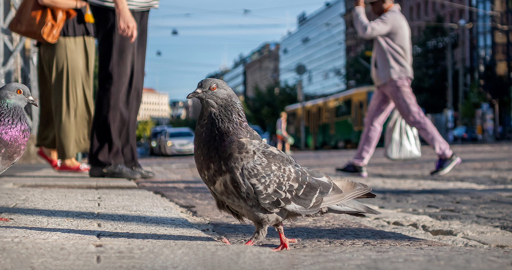

Käydäänpä läpi muutama Suomen parhaimmista lintulajeista. Mitä tarkoitan "parhaalla"? En tiedä. Huom: kyseessä Ainon henkilökohtaiset mielipiteet ;)

Regulus regulus
Euroopan pienin lintu, ihana pieni pallero! Sen ääni on niin korkea, että vanhempien ihmisten on vaikea kuulla sitä. Uskomattoman tyylikäs, kirkkaankeltainen kampaus!

Sturnus vulgaris
Helppo sekoittaa esim. mustarastaaseen, kunnes huomaa sen upeat, metallinhohtoiset värit! Kottaraiset ovat taitavia matkimaan ääniä, ja voivat oppia jopa ihmispuhetta! Kerrassaan älytöntä.

Gallinago gallinago
Nimestäkin sen tietää, tämä lintu kuulostaa aivan taivaalla määkivältä vuohelta. Tämä ääni syntyy pyrstön reunasulista, kun lintu syöksyy alas ilmassa. Mikä taito! Ja mikä ääni!

Cygnus cygnus
Kaunis, ylväs kansallislintumme! 1950-luvulla laji oli sukupuuton partaalla, mutta suojelutoimet onneksi pelastivat sen. Upean linnun trumpettimaisen kaakatuksen tunnistaa jo kaukaa.

Sitta europaea
Puun rungolla kipittää sinertävä pikkulintu pää ylös- sekä alaspäin! On Suomessa heimonsa ja sukunsa ainoa edustaja. Harrastaa ruoan hamstraamista, joten tämän söpöliinin voi helposti houkutella myös lintulaudan vieraaksi.

Tyto alba
Tämä pysäyttävän kaunis lintu kuuluu Suomessa harvinaisuuksiin, eikä se pesi Suomessa. Se on kuitenkin niin mystisen ja satumaisen kaunis, että se ansaitsee paikkansa tällä sivulla. Jopa niiden huhuilu on mystisen matalaa ja kaunista.
Oikeammin, kesykyyhkyt, ovat joutuneet sopeutumaan urbaaniin kaupunkiympäristöön, ja niitä näkee lähes päivittäin. Moni kutsuu näitä älykkäitä lintuja "siivekkäiksi rotiksi". Ja se on sydäntäsärkevää.

Milloin viimeksi pysähdyit ihastelemaan pulun kauneutta?.

Puluista on tullut pysyvä osa kaupunkikuvaamme.
Ihmisten ja pulujen yhteinen historia ulottuu tuhansien vuosien taakse. Puluja pidetään ensimmäisinä ihmisen kesyttäminä lintuina. Erittäin hyvän suuntavaiston omaavia lintuja on käytetty kirjekyyhkyinä läpi ihmiskunnan historian, myös sota-aikoina. Pulut olivat ihmisen uskollisia kumppaneita.
Nykypäivänä pulut joutuvat sopeutumaan kaupunkiympäristöön, sillä ihminen on tuhonnut sen luontaisen elinympäristön. Puluja pidetään usein merkkinä sotkuisuudesta ja järjestyksen puutteesta. Linnut joutuvat usein kärsimään, kun lankoja ja muita ihmisten roskia kiertyy niiden jalkojen ympärille. Pulujen pelätään levittävän tauteja ja häiritsevän ihmisten elämää. Puluja pidetään alempiarvoisena verrattuna muihin lintuihin.
Todellisuudessa kesykyyhky on älykäs ja oppivainen lintu. Tutkimuksissa on huomattu, että pulut osaavat erottaa kuvia toisistaan, ratkaista ongelmia ja jopa tunnistaa oman peilikuvansa. Ne ovat sosiaalisia ja ne muodostavat vahvan siteen kumppaniinsa. Ne ovat myös erittäin sitkeitä selviytyjiä, ja oikeissa olosuhteissa ne voivat talvehtia Suomessakin ja elää jopa 10-vuotiaaksi.
Kun seuraavan kerran kohtaat pulun vaikkapa Helsingin keskustassa, pysähdy hetkeksi pohtimaan sen historiaa, älykkyyttä ja sinnikkyyttä. Pulu ei ole kaupunkimaiseman roska, vaan vanha, uskollinen ystävämme.